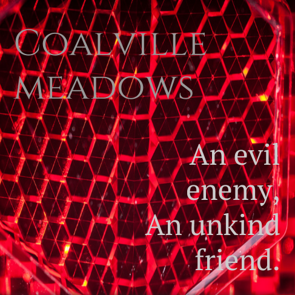

Design a Band Challenge
Challenge Information
Album Cover
Band Biography
Ruy Paul and Julius Daniel grew up in Coalville, North West Leicestershire, England. Knowing each other since a young age, the two grew up together and went to school together, virtually brothers. In high school, the two best friends, not popular or unpopular, began to play music. With Ruy going through a tough time dealing with his parent's recent divorce and Julius going through a recent close friend's death, the two began bonding more and looking towards music to help keep their mind off of what they were going through. Still looked upon as merely a hobby, the two graduated and went off to college together. During their second year of college, they met an incoming freshman named Donny Denver, whom, like them, showed an interest in music. The three immediately began playing music together and soon began getting gigs. With no clue what to name themselves, Ruy and Julius decided upon "Coalville Meadows", a grassland that had grown on top of clay soil near where they had grown up. To the three, the name all had a meaning, the ability to continue on even in circumstances that may seem to make the situation impossible. They began only by performing covers of popular songs, in fear their original music may be judged. After a college, the three decided to leave the music behind, in search of a stable life. After just two years, Ruy, Julius, and Donny met up once again to write new songs. Through the time they were separated, all three had created new friends and new enemies. Sharing their stories with each other, the three came up with the name of, "An evil enemy, an unkind friend," for their soon to be released album. In this album, they wrap around one main quote, "An evil enemy is better than an unkind friend… The enemy hurts the body but the friend hurts the soul."